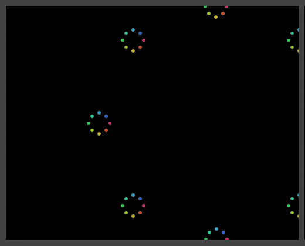

Archive for the ‘programming’ Category.

Whilst cleaning up the mess that is my www directory I found this old demo I made a few years back. I think at the time I wanted to figure out how to position HTML elements in a perfect(ish) circle. It’s not something I’d seen done before or since, probably because it’s a pretty impractical way of positioning HTML. Oh well, I remember having fun doing the coding and figuring out the maths, it also looks quite pretty too.
The trigonometry behind the script is know in maths as the unit circle. Using these rules you can determine where on the xy axis an object should be placed to follow the circumference of a circle.
The code was done a while back, before I was programming OO javascript or using libraries. As such, no guarantees it’ll work and won’t crash your browser!
Take a look at the Unit Circle animation here…
Just been playing around with a free trial of an SMS gateway service. There are loads of these services about, all seeming to offer reasonable prices to send and receive SMS messages.
The service I used had a pretty simple HTTP API which I was hacking about with to send RSS stories to my phone. I’ve previously thought about setting up a service like this - providing up to date football scores to fans. The technological costs involved are pretty much non-existent, as all it would take is a few scripts and a database to tie the thing together. However I got scared off by the sales rep’s from PA Sports when I started looking into licensing their data. It all started to look a bit too much like a real business proposition for me to get involved with in my spare time!
One of the interesting things I noticed about the SMS Gateway’s API is that it allows you to set the sender ID, as in the phone number of the message sender. This allowed me to send a message from the gateway that appeared to have originated from my phone. Unlike email spoofing where it is fairly easy to determine the actual originating sender from studying the message header, I could not find any way of detecting this forgery on my mobile!
This technique is known as SMS Spoofing and is fairly commonplace. For example Skype sends messages from its users with the mobile number they registered with. The cool but scary thing is just how easy it is to do using an SMS gateway. Like email spoofing this technique is easily abused, but perhaps SMS spoofing is all the more dangerous due to it being harder to detect and far less prevalent?
I have finally got around to releasing an update to the JSMin Ant Task project I have on Googlecode. The new version includes a few improvements, new features and bug fixes, including:
- Fix to bug that occurred when minifying jquery 1.2.2
- New feature to add a copyright notice to your minified scripts
- Improved copy / overwrite functionality
Several people have contributed patches to this release which is really nice to see, many thanks guys! I also have to apologise for the amount of time it took to get this release out!
Visit the JSMin Ant Task page on Googlecode